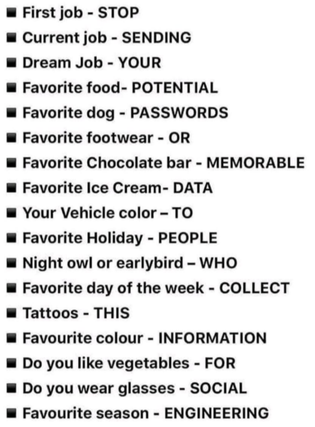

Passwords and identity protection
Agenda
Passwords
Overview
Corporate Policies
Domain Password Policies
Fine Grained Password Policies
Different accounts ? Different passwords !
MFA interaction
Social engineering
The future
Tools
Summary
Overview
This information is intended to show ways to enhance your on-line protection including an overview around the use of passwords, their complexity and usage as well as using MFA and managing Social Engineering situations.
Corporate policy
Consideration should be given to ensuring your Employee Policies are updated with system password detail.
Ensure that your HR personnel procedures and employee training cover the use of passwords and includes statements such as ‘you must not re-use your passwords for corporate systems on any personal accounts’ or ‘never use your corporate email address for personal circumstances’. Failure to adhere to the policies should result in reprimanding of users.
Cyber Essentials Plus requirements should be adhered to.
https://www.ncsc.gov.uk/collection/passwords/updating-your-approach
- Password auditing software should be used along with checking when passwords were last changed. Tools are available to facilitate this.
Default domain password policies
Default Domain Policy Settings
By default your domain password policy will apply to all users - privileged accounts included.
We strongly recommend that you set a higher strength password to privileged accounts, but without using Fine Grained password policies this would not be mandatory.
Strength
Higher strength passwords (for privileged accounts) should be ‘hyper complex’ - so 16 Characters and over, a mix of uppercase and lowercase characters, numbers, special characters.
There are many schools of thought on password complexity, but your aim should be to get passwords as strong as possible without requiring users to have these passwords saved or written down in order to use them !
Follow NCSC guidance if you are unsure whether you feel that your passwords are secure enough
Different account ? Different password !
If you have implemented RBAC in the correct manner, your users with the requirement to have privileged access will have multiple accounts.
Users need educating to ensure they have different passwords on each of these accounts
Fine Grained Policies should assist in enforcing this rule.
Aggregated Accounts : For smaller teams aggregating roles from your RBAC design will facilitate a more secure configuration as users who perform multiple roles will be required to sign out/in less frequently.
Never re-use passwords from your corporate systems in your personal life (either from your email account or websites you visit).
Never use your corporate email address for non work related sites
Fine Grained Password Policies
Fine-grained password policies allow you to specify multiple password policies within a single domain. The apply different restrictions for password and account lockout policies to different sets of users in a domain based on group membership.
Ensure your Active Directory is set up in a logical manner, with users being members of only the role groups that they need to be.
By using fine grained password policies you enhance your security requirements for the user groups for privileged system access that are likely to be the primary targets which could be compromised in any malicious attack which may occur.
Further detail on Fine Grained Policies are in the MHCLG Fine Grained Policy Pack : https://communitiesuk.github.io/local-cyber-support-docs/
NOTE-ROB PLEASE CAN YOU INSERT THE CORRECT HYPERLINK ABOVE
MFA Interaction
By introducing Multi Factor Authentication across your estate you will be able to further protect your accounts.
Multi Factor Authentication works on the principle of requiring more than one of these items:
Something you have (such an authentication application on your phone)
Something you know (such as your username and password)
Something you are (such as fingerprint or iris recognition)
Protect your privileged on premise accounts with MFA, and any M365/Cloud based accounts must have MFA enabled.
Social Engineering
One of the leading causes of unauthorised account access is that the passwords have been ‘cracked’ after the account owner was unwittingly targeted with social engineering.
So what is ‘social engineering’ ?
Social engineering is asking leading questions to someone about something that may seem random…
In the simplest terms, refer to this image

Many older password reset questions are based on questions like this, along with the classic ‘Mothers Maiden Name’ or ‘First School’.
If you answer questions like this on social media, you are giving away potential passwords or clues which can lead hackers to your actual system passwords.
The Future
Identity Protection & Management
- The future of user identities lies in cloud integration. Look at Microsoft Azure AD Identity Protection.
Passwordless (honestly !)
- This is an authentication method in which a user can log in to a computer system without the entering a password or any other knowledge-based secret.
Passwordless authentication relies on a cryptographic key pair – a private and a public key
More use of biometrics
- This can pair with the passwordless technology, so user logins can be made by fingerprint / iris / facial recognition.
More MFA
- Extend any MFA that you have in place to make it a required part of your end users log-in process.
This will increase your security and it will reduce the impact of a cyber attack.
Preparing now by implementing Fine Grained Policies, MFA and good practice guidelines will make the adoption of these technologies in the future easier as the foundations will be in place.
Tools & Information
These sites are two very useful examples to educate users about:
How secure is my password - on this website you can retype a password and it will give you an indication of how secure it is, and how long it could take to crack it.
https://howsecureismypassword.net/
- Have I been pwned - this is a credible website where you can enter and email address of mobile phone number to see if it has been involved in any data breaches. If a breach is highlighted, change the password of the email account and also at any site where you may have registered it.
https://haveibeenpwned.com/
Summary
Change internal policies to require users to not re-use personal passwords for corporate systems, and vice-versa
Implement Fine Grained Password Policies where applicable
Regularly carry out password complexity audits
Implement MFA where appropriate
Educate users on the dangers of social engineering
Look towards implementing new security technologies as they become viable for your organisation
If in doubt - Trust no-one !
VERY IMPORTANT !
DO NOT USE YOUR CORPORATE EMAIL ADDRESS FOR NON APPROVED WEBSITES
DO NOT RE-USE YOUR CORPORATE PASSWORD FOR ANY PUBLIC WEBSITE
THINK BEFORE DIVULGING DETAILS !